Citations from one paper or patent to earlier ones, dated by the
citing document. All of a document’s citations happen at its own date,
there is no reciprocity, and each pair fires once, so these are one-shot
processes for risk = "remove" with popularity (in-degree)
as the main endogenous driver.
The data catalogue lists every dataset with its licence. Figures and numbers on this page are aggregates computed from the files as published; each section links the source and the code that reads it.
| dataset | events | actors | licence | amorem |
|---|---|---|---|---|
| SNAP: arXiv hep-th citations with dates | 136,416 | 18,477 | none stated | obtain from source |
| SNAP: arXiv hep-ph citations with dates | 347,375 | 30,565 | none stated | obtain from source |
| KDD Cup 2003 arXiv hep-th papers, citations, dates | 352,768 | 27,769 | none stated | obtain from source |
| NBER US patent citations 1975-1999 | 16,516,269 | 3,774,362 | none stated (freely available; cite Hall, Jaffe & Trajtenberg 2001) | obtain from source |
SNAP: arXiv hep-th citations with dates
Source: https://snap.stanford.edu/data/ · Licence: none stated · Status in amorem: no licence stated: not redistributed; obtain from the source.
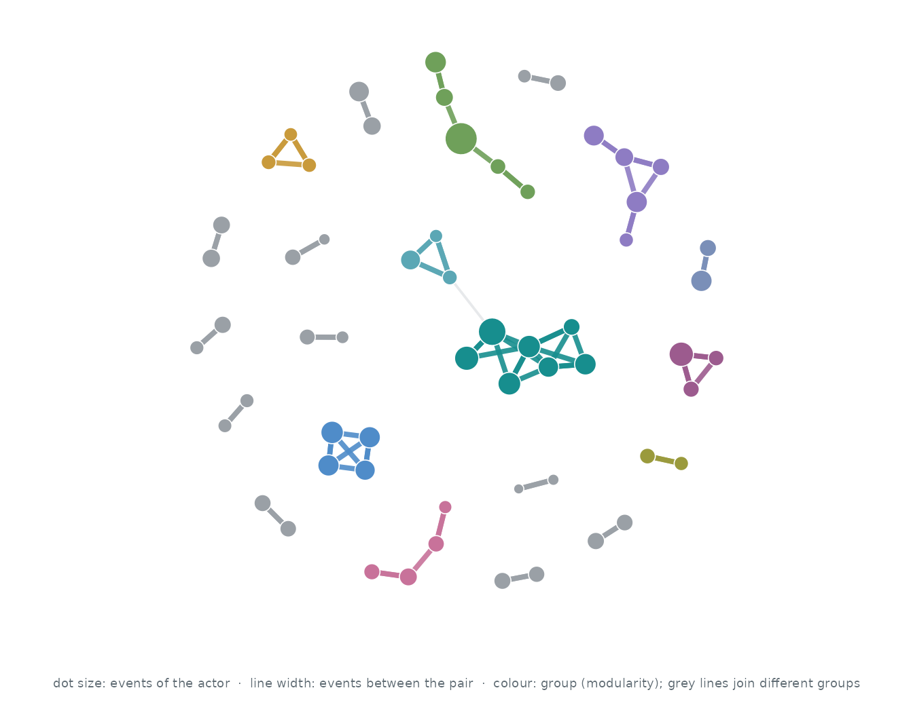
Who interacts with whom. The 60 actors of the busiest pairs, out of 18,477; events between two of them are 0.1% of all events. Each actor’s three strongest ties are drawn (54 of 57 pairs that ever interacted): wider, darker lines carry more events, larger dots are more active actors, and colours are groups found by modularity (Louvain).
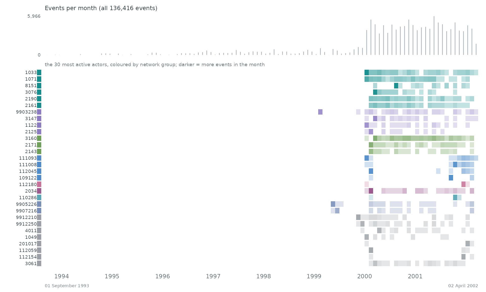
When. Each row is one of the 30 most active actors of the network, coloured by its group there; a cell is darker the more events (with anyone) the actor took part in during that stretch of time. The grey bars on top count all 136,416 events.
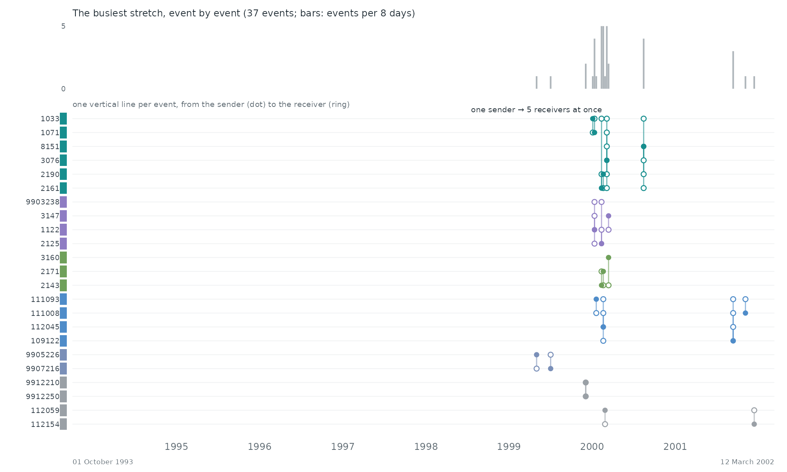
Event by event. The busiest stretch of the record, 01 October 1993 to 12 March 2002, event by event: each vertical line is one event between two of the actors above, from the sender (dot) to the receiver (ring).
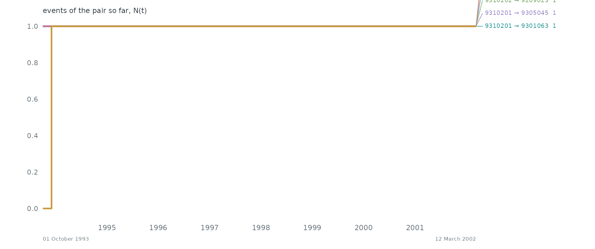
Pairs as counting processes. The counting process N(t) of the 6 busiest pairs: the number of events of the pair up to time t. Together they make 0.0% of all events. Steep stretches are bursts and flat ones silences.
Statistical profile.
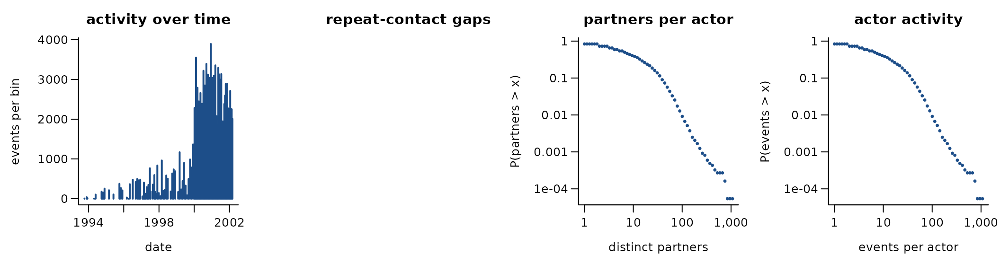
136,416 directed events among 18,477 actors over 3,084.0 days (136,416 distinct ordered pairs). 0.0% of events repeat an earlier ordered pair; if every event chose a pair at random the share would be 0.0%. 0.1% of events answer an earlier event in the opposite direction. The burstiness coefficient of the gaps between successive events of the same pair is NA (0 for a Poisson process, positive when events cluster in bursts); the most active tenth of the actors take part in 44.7% of events (Gini 0.62). 99.4% of events share their time stamp with an earlier one. citation at the citing paper’s submission date; days since 1970-01-01
A conditional logit on the first 4,000 events (one sampled control per event) gives:
| term | estimate | s.e. |
|---|---|---|
| log(1 + sender’s past events) | -25.48 | 1241.73 |
| log(1 + receiver’s past events received) | 0.44 | 0.04 |
| log(1 + past events receiver -> sender) | NA | 0.00 |
These coefficients reflect how the data are built, not behaviour: a paper makes all its citations at once, so the sender’s past activity is 0 at its own events.
Get the data
download.file("https://snap.stanford.edu/data/cit-HepTh-dates.txt.gz", "cit-HepTh-dates.txt.gz", mode = "wb")
download.file("https://snap.stanford.edu/data/cit-HepTh.html", "cit-HepTh.html", mode = "wb")
download.file("https://snap.stanford.edu/data/cit-HepTh.txt.gz", "cit-HepTh.txt.gz", mode = "wb")A reader that turns these files into a
(sender, receiver, time) table is
readers[["snap-cit-hepth"]] in data-raw/catalogue/readers.R.
SNAP: arXiv hep-ph citations with dates
Source: https://snap.stanford.edu/data/ · Licence: none stated · Status in amorem: no licence stated: not redistributed; obtain from the source.
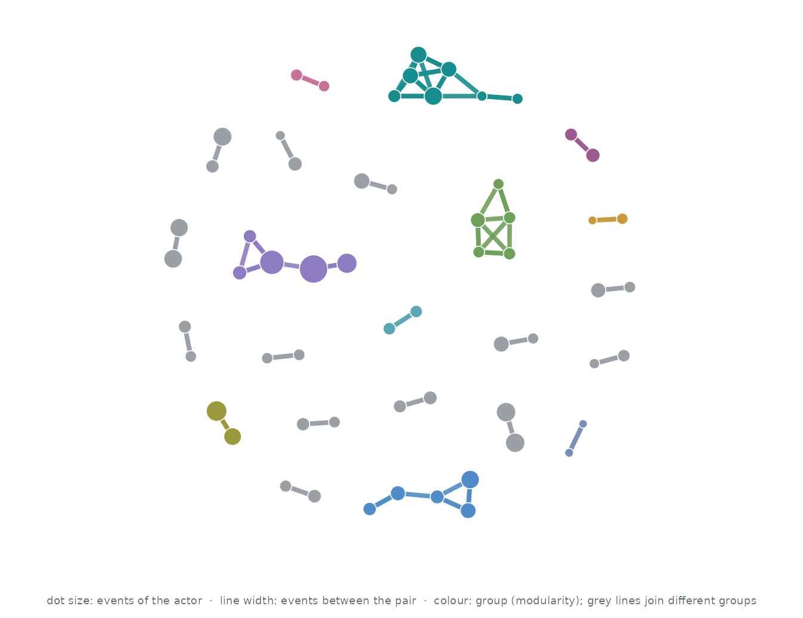
Who interacts with whom. The 60 actors of the busiest pairs, out of 30,565; events between two of them are 0.0% of all events. Each actor’s three strongest ties are drawn (49 of 49 pairs that ever interacted): wider, darker lines carry more events, larger dots are more active actors, and colours are groups found by modularity (Louvain).
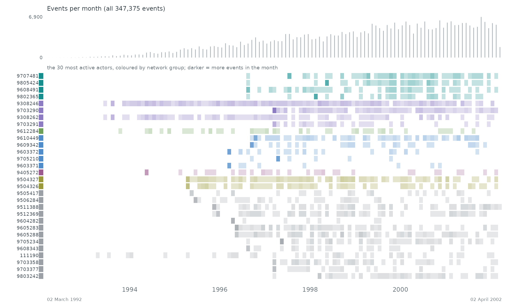
When. Each row is one of the 30 most active actors of the network, coloured by its group there; a cell is darker the more events (with anyone) the actor took part in during that stretch of time. The grey bars on top count all 347,375 events.
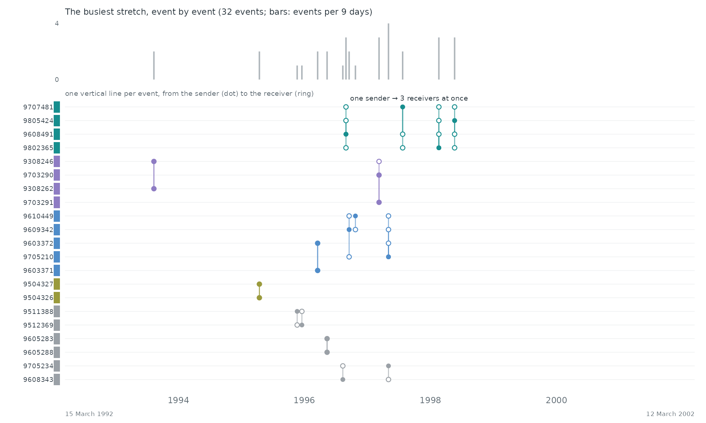
Event by event. The busiest stretch of the record, 15 March 1992 to 12 March 2002, event by event: each vertical line is one event between two of the actors above, from the sender (dot) to the receiver (ring).
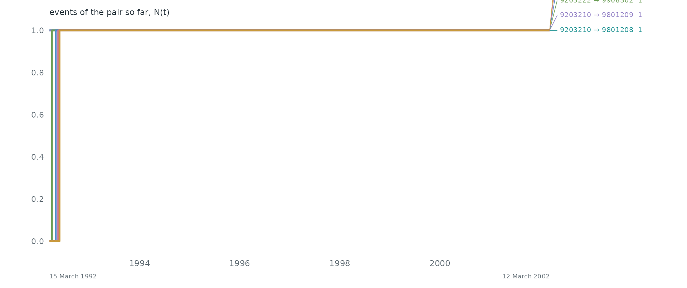
Pairs as counting processes. The counting process N(t) of the 6 busiest pairs: the number of events of the pair up to time t. Together they make 0.0% of all events. Steep stretches are bursts and flat ones silences.
Statistical profile.
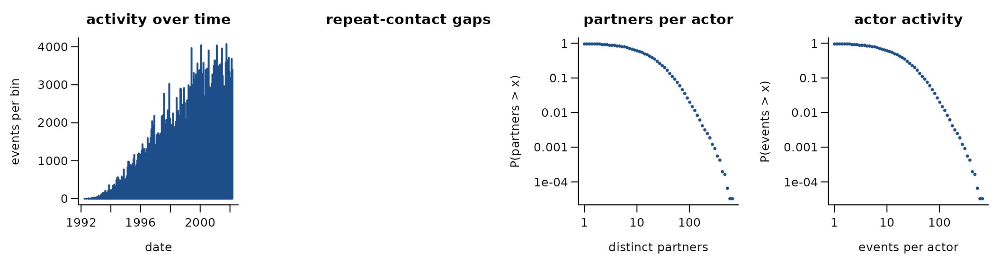
347,375 directed events among 30,565 actors over 3,649.0 days (347,375 distinct ordered pairs). 0.0% of events repeat an earlier ordered pair; if every event chose a pair at random the share would be 0.0%. 0.1% of events answer an earlier event in the opposite direction. The burstiness coefficient of the gaps between successive events of the same pair is NA (0 for a Poisson process, positive when events cluster in bursts); the most active tenth of the actors take part in 37.8% of events (Gini 0.52). 99.1% of events share their time stamp with an earlier one. citation at the citing paper’s submission date; days since 1970-01-01
A conditional logit on the first 4,000 events (one sampled control per event) gives:
| term | estimate | s.e. |
|---|---|---|
| log(1 + sender’s past events) | -27.93 | 530.87 |
| log(1 + receiver’s past events received) | 1.50 | 0.06 |
| log(1 + past events receiver -> sender) | 0.93 | 1.71 |
These coefficients reflect how the data are built, not behaviour: a paper makes all its citations at once, so the sender’s past activity is 0 at its own events.
Get the data
download.file("https://snap.stanford.edu/data/cit-HepPh-dates.txt.gz", "cit-HepPh-dates.txt.gz", mode = "wb")
download.file("https://snap.stanford.edu/data/cit-HepPh.html", "cit-HepPh.html", mode = "wb")
download.file("https://snap.stanford.edu/data/cit-HepPh.txt.gz", "cit-HepPh.txt.gz", mode = "wb")A reader that turns these files into a
(sender, receiver, time) table is
readers[["snap-cit-hepph"]] in data-raw/catalogue/readers.R.
KDD Cup 2003 arXiv hep-th papers, citations, dates
Source: https://www.cs.cornell.edu/projects/kddcup/datasets.html · Licence: none stated · Status in amorem: no licence stated: not redistributed; obtain from the source.
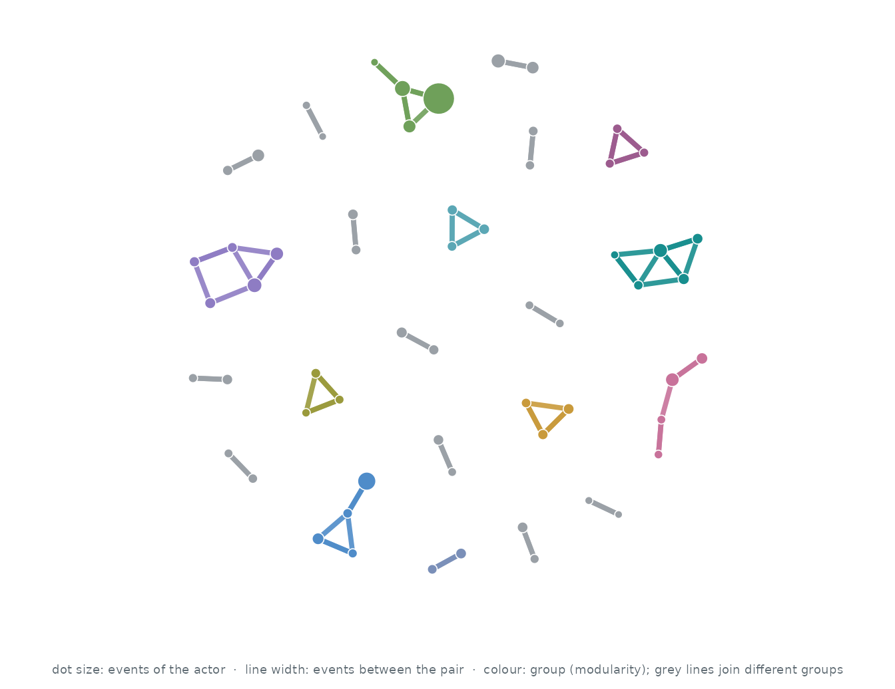
Who interacts with whom. The 60 actors of the busiest pairs, out of 27,769; events between two of them are 0.0% of all events. Each actor’s three strongest ties are drawn (49 of 49 pairs that ever interacted): wider, darker lines carry more events, larger dots are more active actors, and colours are groups found by modularity (Louvain).
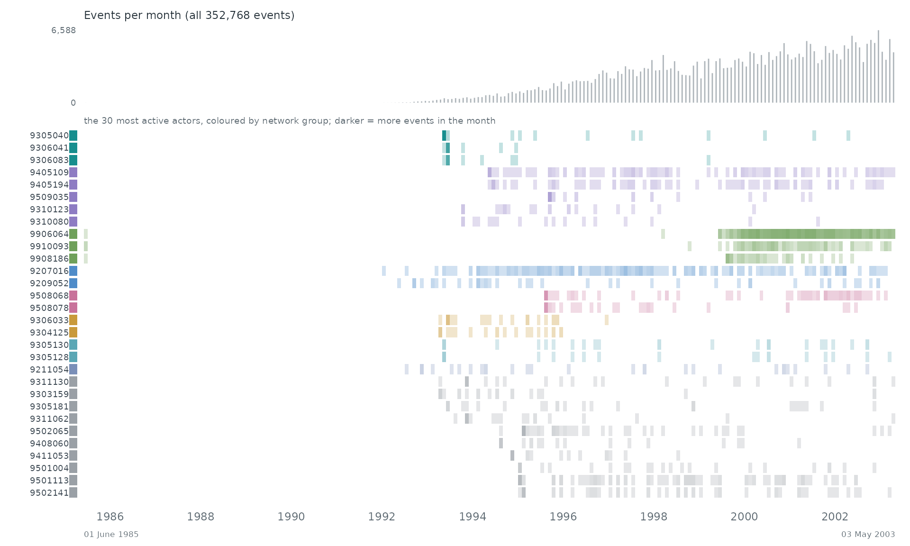
When. Each row is one of the 30 most active actors of the network, coloured by its group there; a cell is darker the more events (with anyone) the actor took part in during that stretch of time. The grey bars on top count all 352,768 events.
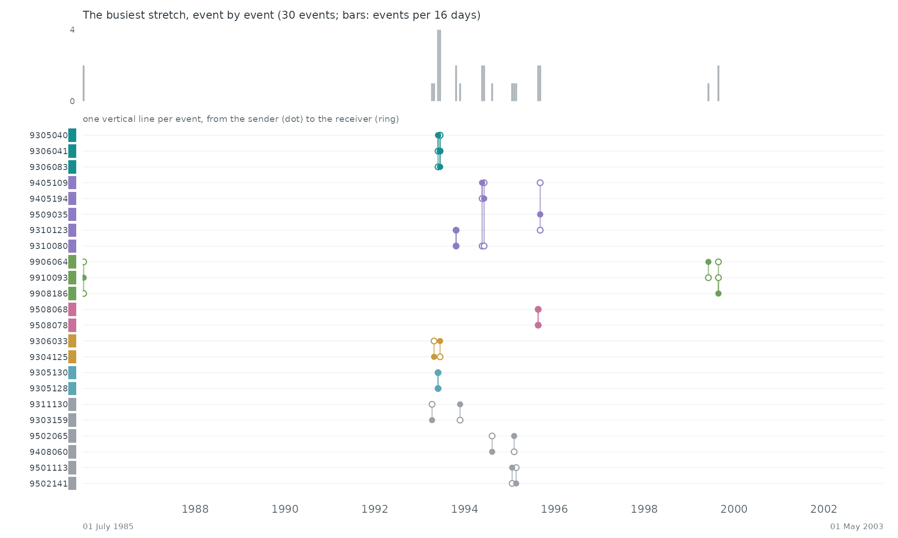
Event by event. The busiest stretch of the record, 01 July 1985 to 01 May 2003, event by event: each vertical line is one event between two of the actors above, from the sender (dot) to the receiver (ring).
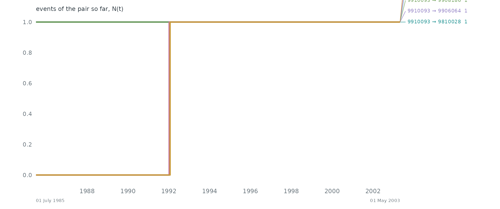
Pairs as counting processes. The counting process N(t) of the 6 busiest pairs: the number of events of the pair up to time t. Together they make 0.0% of all events. Steep stretches are bursts and flat ones silences.
Statistical profile.
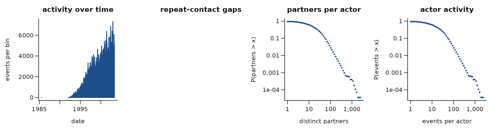
352,768 directed events among 27,769 actors over 6,513.0 days (352,768 distinct ordered pairs). 0.0% of events repeat an earlier ordered pair; if every event chose a pair at random the share would be 0.0%. 0.1% of events answer an earlier event in the opposite direction. The burstiness coefficient of the gaps between successive events of the same pair is NA (0 for a Poisson process, positive when events cluster in bursts); the most active tenth of the actors take part in 41.6% of events (Gini 0.57). 99.3% of events share their time stamp with an earlier one. citing -> cited paper at the citing paper’s SLAC date
A conditional logit on the first 4,000 events (one sampled control per event) gives:
| term | estimate | s.e. |
|---|---|---|
| log(1 + sender’s past events) | -26.69 | 547.70 |
| log(1 + receiver’s past events received) | 1.25 | 0.05 |
| log(1 + past events receiver -> sender) | 3.77 | 1.58 |
These coefficients reflect how the data are built, not behaviour: a paper makes all its citations at once, so the sender’s past activity is 0 at its own events.
Get the data
download.file("https://www.cs.cornell.edu/projects/kddcup/datasets.html", "datasets.html", mode = "wb")
download.file("https://www.cs.cornell.edu/projects/kddcup/download/hep-th-abs.tar.gz", "hep-th-abs.tar.gz", mode = "wb")
download.file("https://www.cs.cornell.edu/projects/kddcup/download/hep-th-citations.tar.gz", "hep-th-citations.tar.gz", mode = "wb")
download.file("https://www.cs.cornell.edu/projects/kddcup/download/hep-th-slacdates.tar.gz", "hep-th-slacdates.tar.gz", mode = "wb")
download.file("https://www.cs.cornell.edu/projects/kddcup/rules.html", "rules.html", mode = "wb")A reader that turns these files into a
(sender, receiver, time) table is
readers[["kddcup2003-hepth"]] in data-raw/catalogue/readers.R.
NBER US patent citations 1975-1999
Source: https://www.nber.org/research/data/us-patents · Licence: none stated (freely available; cite Hall, Jaffe & Trajtenberg 2001) · Status in amorem: no licence stated: not redistributed; obtain from the source.
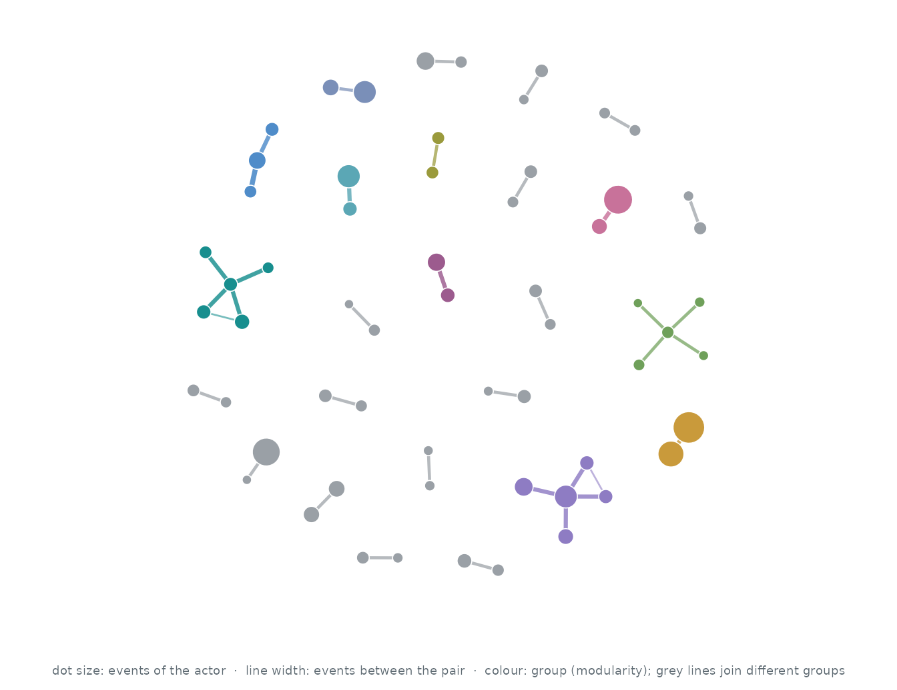
Who interacts with whom. The 60 actors of the busiest pairs, out of 3,774,362; events between two of them are 0.0% of all events. Each actor’s three strongest ties are drawn (37 of 37 pairs that ever interacted): wider, darker lines carry more events, larger dots are more active actors, and colours are groups found by modularity (Louvain).
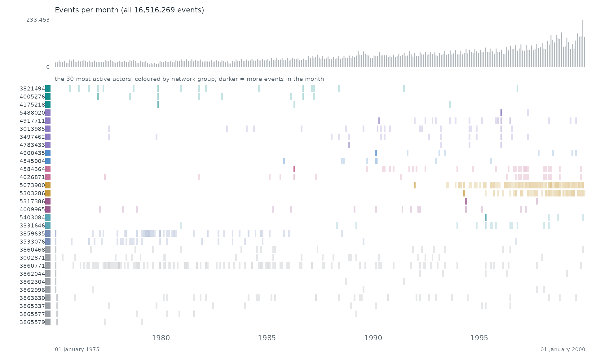
When. Each row is one of the 30 most active actors of the network, coloured by its group there; a cell is darker the more events (with anyone) the actor took part in during that stretch of time. The grey bars on top count all 16,516,269 events.
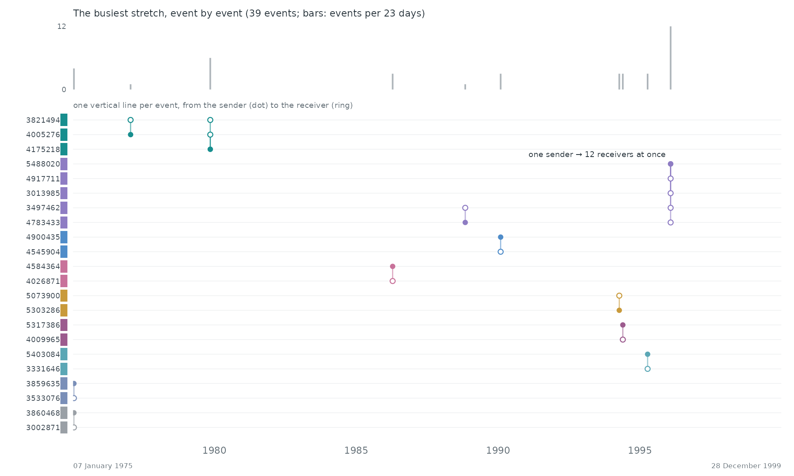
Event by event. The busiest stretch of the record, 07 January 1975 to 28 December 1999, event by event: each vertical line is one event between two of the actors above, from the sender (dot) to the receiver (ring).
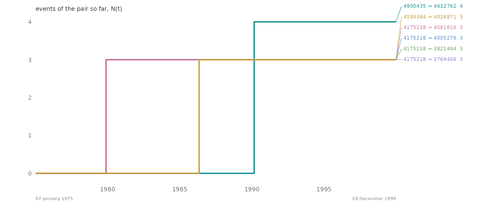
Pairs as counting processes. The counting process N(t) of the 6 busiest pairs: the number of events of the pair up to time t. Together they make 0.0% of all events. Steep stretches are bursts and flat ones silences.
Statistical profile.
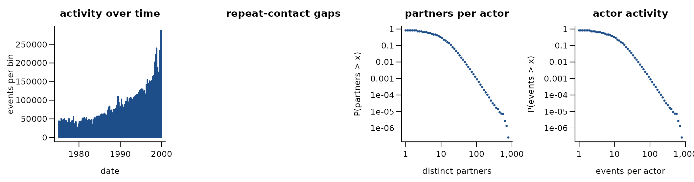
16,516,269 directed events among 3,774,362 actors over 9,121.0 days (16,512,782 distinct ordered pairs). 0.0% of events repeat an earlier ordered pair; if every event chose a pair at random the share would be 0.0%. 0.0% of events answer an earlier event in the opposite direction. The burstiness coefficient of the gaps between successive events of the same pair is NA (0 for a Poisson process, positive when events cluster in bursts); the most active tenth of the actors take part in 35.6% of events (Gini 0.52). 100.0% of events share their time stamp with an earlier one. citing -> cited US patent at the citing patent’s grant date (GDATE, days since 1960-01-01, shifted to 1970)
A conditional logit on the first 4,000 events (one sampled control per event) gives:
| term | estimate | s.e. |
|---|---|---|
| log(1 + sender’s past events) | NA | 0 |
| log(1 + receiver’s past events received) | NA | 0 |
| log(1 + past events receiver -> sender) | NA | 0 |
These coefficients reflect how the data are built, not behaviour: a patent makes all its citations at once; the first events have no history.
Get the data
download.file("https://data.nber.org/patents/Cite75_99.txt", "Cite75_99.txt", mode = "wb")
download.file("https://data.nber.org/patents/acite75_99.zip", "acite75_99.zip", mode = "wb")
download.file("https://data.nber.org/patents/apat63_99.zip", "apat63_99.zip", mode = "wb")
download.file("https://data.nber.org/patents/errata.txt", "errata.txt", mode = "wb")
download.file("https://data.nber.org/patents/list_of_classes.txt", "list_of_classes.txt", mode = "wb")
download.file("https://data.nber.org/patents/list_of_countries.txt", "list_of_countries.txt", mode = "wb")
download.file("https://data.nber.org/patents/overview.txt", "overview.txt", mode = "wb")
download.file("https://data.nber.org/patents/pat63_99.txt", "pat63_99.txt", mode = "wb")
download.file("https://data.nber.org/patents/subcategories.txt", "subcategories.txt", mode = "wb")
download.file("https://www.nber.org/research/data/us-patents", "us-patents-1975-1999.html", mode = "wb")A reader that turns these files into a
(sender, receiver, time) table is
readers[["nber-patent-citations"]] in data-raw/catalogue/readers.R.